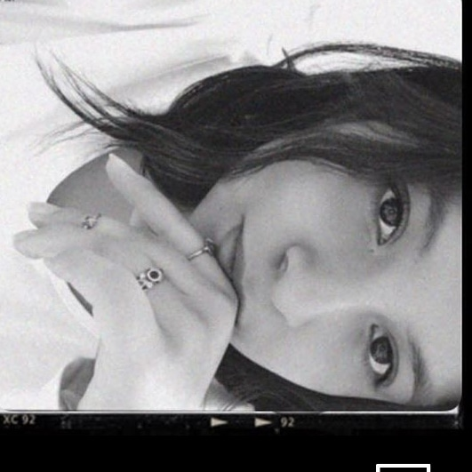
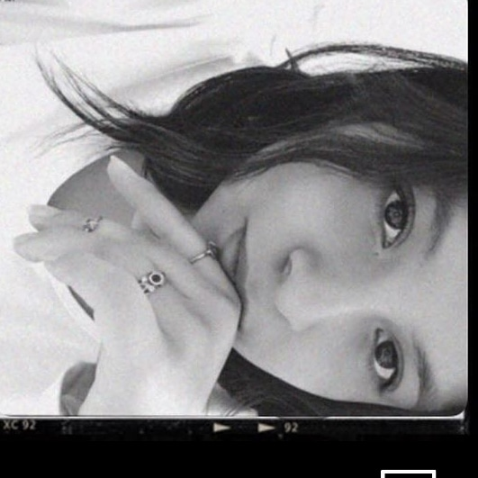
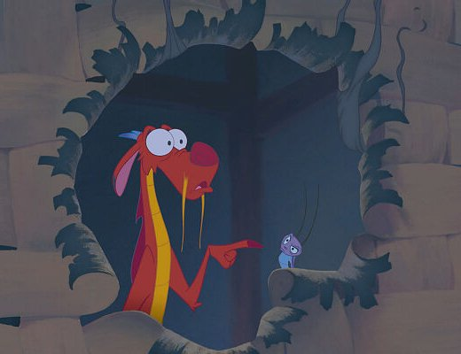
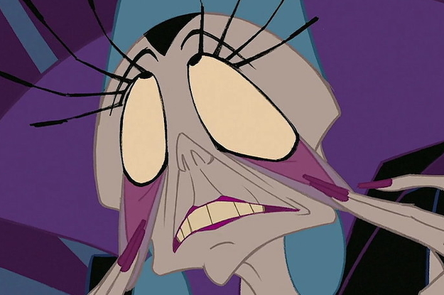

Les contare un poco sobre dos temas que me gustan:
Me gusta jugar videojuegos en mis ratos libres o de noche, siento que de noche da una vibe diferente y casi siempre escucho música (desde clasica a phonk o hasta belicas jsjjska) mientras juego entonces se me va el tiempo cuando juego; humildemente juego Fortnite aunque recientemente probe Valorant pero aun tengo que acostumbrarme pq apenas lo prove, Animal Crossing, Beyond Blue y OSU! tambien me gustan, pero son cuando ando tranqui jsjs.
Me gusta mucho mostrar lo que imagino, pienso o siento mediante los medios artisticos, es decir, ademas de la ilustración digital también me gusta pintar y dibujar de forma tradicional pues me gusta observar como en especial al mezclar los colores y las texturas en los diferentes medios dan un efecto diferente. Creo que en general soy una persona muy creativa.
𖧵 ✶ ✜ ↠✙ 𖧵 ✶ ✜ ↠✙ ✘ 𓇬 𖧵 ✶ ✜ ↠✙ ✘ 𓇬 𖧵 |
𖧵 ✶ ✜ ↠✙ 𖧵 ✶ ✜ ↠✙ ✘ 𓇬 𖧵 ✶ ✜ ↠✙ ✘ 𓇬 𖧵 |
|---|---|
Mi top 10 pelÃculas favoritas.
|
Mi top de comidas favoritas.
|
Nota: no estan en orden, pero todos son top top top :DDDD
| Nombre: | Imagen: | ¿Por qué? |
|---|---|---|
|
Mushu y Cri-kee |
 |
Sinceramente me robe su personalidad de los dos, los dos son tan graciosos y ocurrentes, mis amigos mas personales. |
|
Dewey |
En general me gusta mucho Malcom el de en medio, pense en poner tambien a Francis, pero creo que me identifico más con Dewey, es muy yo. |
|
|
Polar |
Esta caricatura es de mis favoritas y Polar es tranquilo, transmite paz, sabe cocinar ademas de que sabe muchas cosas, me inspira. |
|
|
Yzma |
 |
Ella es iconica y se matiene vigente quien no la conozca no es una persona basada, peronalmente sus frases me encantan JKAJAK |
|
Bibble |

|
Un personaje ya viejito peero desde que lo vi en Barbie Fairytopia siempre me hace reir adjsjdk, sus expresiones faciales son top. |
Puchen en Mirar en Youtube y si te aparece :'